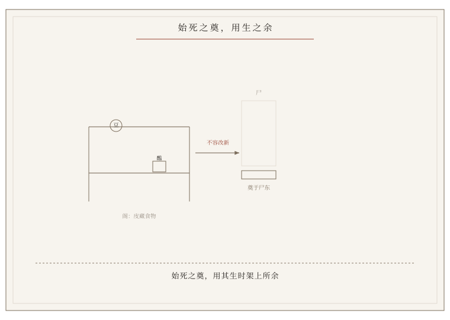

檀弓上 · 三·三十二 · 第 235 课
曾子曰：「始死之奠，其馀阁也与。」注「不容改新。阁，庋藏食物」。
说什么事：人刚死，第一份祭品用的是他生前架子上剩下的那点干肉果酱。
落在哪一层：礼，兼及礼制与礼意。论「始死之奠」之所以用余。
为何编在此位：上节论临终之名，此节论初死之奠。名与奠，皆在生死之交。
【经】曾子曰：「始死之奠，其餘閣也與。」
【注】不容改新。閣，庋藏食物。
【疏】此一节论初死奠之所用之事。「始死之奠」者，鬼神所依于饮食，故必有祭酹；但始死未容改异，故以生时庋阁上所余脯醢以为奠也。《士丧礼》复魄毕，「以脯醢升自阼阶，奠于尸东」，此之谓也。注「不容改新」：阁，架橙之属，人老及病，饮食不离寝，恐忽须无当，故并将近置室里阁上也；若死仍用阁之余奠者，为时期切促，急令奠酹，不容方始改新也。
奠 注「鬼神所依于饮食，故必有祭酹」。初死之祭。
阁 注「阁，庋藏食物」。架橙之属，藏食之所。
与 语辞，表拟度。
脯醢 干肉与肉酱。
不容改新 注语。来不及另办新的。
曾子说：「刚死时的祭奠，大概就是他架子上剩下的那些食物吧。」
此节一句问语，注四字答之：「不容改新」。人一死，事急，来不及另办一份新的祭品，就用他卧病时架子上剩下的脯醢。此中有一层不忍：第一份奠，用的还是他生前最后那些日子里的东西。
第一层 复魄与奠 《士丧礼》复魄毕，「以脯醢升自阼阶，奠于尸东」。复是招魂，奠是初祭。招之不返，便以食奠之。礼于生死之际，一步不乱。
第二层 阁为近身之物 注「人老及病，饮食不离寝，恐忽须无当，故并将近置室里阁上也」。此段写老人的日常极细：因为怕忽然要吃而没有，就把食物放在卧室的架子上。此架，是生时之物；人一死，它成了第一份祭品。
第三层 「不容」二字 注「不容改新」。所记不是制度的选择，是时间的逼迫：时期切促，急令奠酹。礼之制定，往往正是从这种「来不及」里长出来的。
第四层 一问之体 此节是曾子之问，非记者之断。「也与」二字，是拟度而非判定，故疏以「此之谓也」引《士丧礼》为证。此可见曾子之学的态度：先立一疑，再以礼文印之。
与今日何干 凡丧事，最初那一夜最乱。此节给的是一条极朴素的办法：先用他身边有的。礼之高深处，常在这样的小处。
| 左 | 右 |
|---|---|
| 始死之奠 | 复魄毕即奠 |
| 其馀阁也与 | 用生时架上所余脯醢 |
| 不容改新 | 时期切促，急令奠酹 |
| 阁，庋藏食物 | 架橙之属，置于寝室 |
| 人老及病，饮食不离寝 | 恐忽须无当 |
| 奠于尸东 | 《士丧礼》之文 |
画一间寝室，视点略低。室内一张床，床上无人，被褥尚温未整。床侧靠墙立着一具木架（两层横板），上层放一只陶豆（内盛干肉）、下层放一只小陶罐（口有盖）。架子与床之间地上铺一小席，席上一只空盘，盘的位置正对床尾。架上与席上都落着一点灰尘。不写文字、不画人。赭色只用在陶豆的沿口与小陶罐的盖上。
